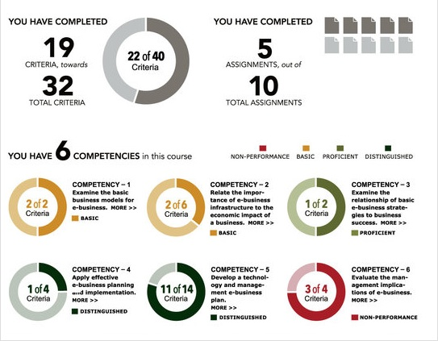
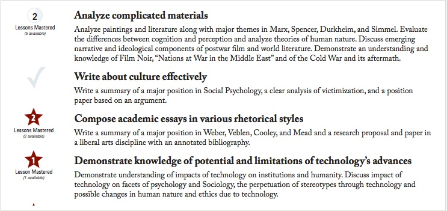

4.5 Aprendizagem baseada em competências



4.5.1 O que é aprendizagem baseada em competências?
A aprendizagem baseada em competências começa com a identificação de competências ou habilidades específicas e permite que os aprendizes desenvolvam o domínio de cada uma delas no seu próprio ritmo, geralmente trabalhando com um mentor. Os aprendizes podem desenvolver apenas as competências ou habilidades que julgam necessitar (pelas quais, cada vez mais, podem receber um “selo/badge” ou alguma forma de reconhecimento validado), ou podem combinar todo um conjunto de competências em uma qualificação completa, como um certificado, diploma ou, cada vez mais, um diploma de graduação pleno.
Os aprendizes trabalham individualmente, geralmente de forma on-line, em vez de em turmas fechadas (coortes). Se os aprendizes puderem demonstrar que já possuem o domínio de uma determinada competência ou habilidade, por meio de um teste ou de alguma forma de avaliação de aprendizagem prévia, poderá ser permitida a transição para o nível seguinte de competência sem terem de repetir um curso programado para a competência anterior. A aprendizagem baseada em competências tenta romper com o modelo de sala de aula agendado regularmente, onde os estudantes estudam o mesmo assunto na mesma velocidade em um grupo de colegas.
O valor da aprendizagem baseada em competências para o desenvolvimento de competências ou habilidades práticas ou profissionais é mais evidente, mas, cada vez mais, ela está sendo utilizada para a educação que exige o desenvolvimento de competências mais abstratas ou acadêmicas, às vezes combinada com outras disciplinas ou programas baseados em turmas.
4.5.2 Quem usa a aprendizagem baseada em competências?
A Western Governors University nos EUA, com quase 40.000 estudantes, foi pioneira na aprendizagem baseada em competências, mas, com o apoio mais recente do Departamento Federal de Educação dos EUA, essa modalidade está se expandindo rapidamente no país. Outras instituições que fazem uso extensivo da aprendizagem baseada em competências são a Southern New Hampshire University por meio do seu College for America, planejado especificamente para adultos que trabalham e seus empregadores, a Northern Arizona University e a Capella University.
A aprendizagem baseada em competências é particularmente adequada para aprendizes adultos com experiência de vida que possam ter desenvolvido competências ou habilidades sem educação ou treinamento formal, para aqueles que iniciaram a escola ou faculdade, abandonaram e desejam retornar aos estudos formais, mas querem que seu aprendizado “extraescolar” seja reconhecido, ou para aqueles que desejam desenvolver habilidades específicas, mas não buscam um programa completo de estudos. A aprendizagem baseada em competências pode ser realizada por meio de um programa presencial, mas é cada vez mais oferecida de forma totalmente on-line, porque muitos estudantes que realizam esses programas já estão trabalhando ou procurando emprego, e porque a tecnologia permite que cada estudante trilhe um caminho distinto no conteúdo com base em seus conhecimentos prévios.
4.5.3 Planejando a aprendizagem baseada em competências
Existem várias abordagens, mas o modelo da Western Governors ilustra muitas das etapas principais.
4.5.3.1 Definindo competências
Uma característica da maioria dos programas baseados em competências é a parceria entre empregadores e educadores na identificação das competências necessárias, pelo menos em nível macro. Algumas das competências descritas no Capítulo 1, como a resolução de problemas ou o pensamento crítico, podem ser consideradas de alto nível, mas a aprendizagem baseada em competências tenta detalhar objetivos abstratos ou vagos em competências específicas e mensuráveis.
Por exemplo, na Western Governors University (WGU), para cada curso, um conjunto de competências de alto nível é definido pelo Conselho Universitário, e então uma equipe de especialistas no assunto contratados pega as dez competências macro para uma qualificação específica e as divide em cerca de 30 competências mais específicas, em torno das quais são construídos os cursos on-line para desenvolver o domínio de cada uma delas. As competências baseiam-se no que se espera que os egressos saibam no local de trabalho e como profissionais em uma carreira escolhida. As avaliações são planejadas especificamente para avaliar o domínio de cada competência; assim, os estudantes recebem aprovação/reprovação (pass/no pass) após a avaliação. O diploma é concedido quando todas as 30 competências especificadas forem alcançadas com sucesso.
Definir competências que atendam às necessidades dos estudantes e dos empregadores de forma progressiva (em que uma competência se baseia nas anteriores e leva a outras mais avançadas) e coerente (em que a soma de todas as competências forma um egresso com todos os conhecimentos e competências exigidos em uma empresa ou profissão) é talvez a parte mais importante e difícil da aprendizagem baseada em competências.
4.5.3.2 Design de cursos e programas
Na WGU, as disciplinas são criadas por especialistas internos que selecionam currículos on-line existentes de terceiros e/ou recursos como livros didáticos digitais por meio de contratos com editoras. Cada vez mais são utilizados recursos educacionais abertos. A WGU não utiliza um sistema de gestão de aprendizagem padrão, mas sim um portal planejado especificamente para cada disciplina. Os livros didáticos digitais são oferecidos aos estudantes sem custos extras para eles, através de contratos entre a WGU e as editoras. As disciplinas são predeterminadas para o estudante, sem disciplinas eletivas. Os estudantes são admitidos mensalmente e avançam por cada competência no seu próprio ritmo.
Os estudantes que já possuem competências podem acelerar seu programa de duas maneiras: transferindo créditos de um curso superior anterior em áreas apropriadas (por exemplo, educação geral, redação); ou fazendo exames quando se sentirem preparados.
4.5.3.3 Suporte ao aprendiz
Novamente, isso varia de instituição para instituição. A WGU emprega atualmente cerca de 750 professores que atuam como mentores. Existem dois tipos de mentores: mentores “de estudantes” e mentores “de disciplinas”. Os mentores de estudantes, que possuem qualificações na área temática, geralmente em nível de mestrado, mantêm contato telefônico pelo menos quinzenal com os seus estudantes, dependendo das necessidades deles no andamento das disciplinas, e constituem o principal canal de contato. Um mentor de estudantes é responsável por cerca de 85 estudantes. Os estudantes iniciam com um mentor desde o primeiro dia e permanecem com ele até a formatura. Os mentores ajudam os estudantes a determinar e manter um ritmo adequado de estudos e intervêm com apoio quando os estudantes enfrentam dificuldades.
Os mentores de disciplinas são mais qualificados, geralmente com doutorado, e oferecem suporte extra aos estudantes quando necessário. Os mentores de disciplinas atendem de 200 a 400 estudantes de cada vez, dependendo da necessidade da área.
Os estudantes podem entrar em contato com os mentores de estudantes ou de disciplinas a qualquer momento (acesso ilimitado) e espera-se que os mentores respondam às chamadas dos estudantes no prazo de um dia útil. Os mentores trabalham em tempo integral, mas com horários flexíveis, geralmente em regime de home office. Os mentores são razoavelmente bem remunerados e recebem treinamento extensivo em mentoria.
4.5.3.4 Avaliação
A WGU utiliza trabalhos escritos, portfólios, projetos, desempenho supervisionado dos estudantes e tarefas corrigidas por computador, conforme apropriado, com rubricas detalhadas. As avaliações são enviadas de forma on-line e, se exigirem avaliação humana, avaliadores qualificados (especialistas no assunto treinados pela WGU em avaliação) são designados aleatoriamente para corrigir o trabalho com base em aprovação/reprovação. Se os estudantes não forem aprovados, os avaliadores fornecem feedback sobre as áreas onde a competência não foi demonstrada. Os estudantes podem reenviar o trabalho se necessário.


Os estudantes realizarão exames formativos (pré-avaliação) e somativos (supervisionados). A WGU está utilizando cada vez mais a supervisão on-line (proctoring), permitindo que os estudantes façam exames em casa sob supervisão de vídeo, utilizando tecnologia de reconhecimento facial para garantir que o estudante matriculado é quem está realizando a prova. Em áreas como ensino e saúde, o desempenho ou a prática dos estudantes é avaliado in loco por profissionais (professores, enfermeiros).



4.5.4 Pontos fortes e fracos
Os defensores identificaram uma série de pontos fortes na abordagem de aprendizagem baseada em competências:
- atende às necessidades imediatas das empresas e profissões; os estudantes já estão trabalhando e recebem promoção dentro da empresa ou, se desempregados, têm mais chances de serem contratados quando qualificados;
- permite que os aprendizes com compromissos profissionais ou familiares estudem no seu próprio ritmo;
- para alguns estudantes, acelera o tempo de conclusão de uma qualificação, permitindo o reconhecimento de aprendizagens anteriores;
- os estudantes recebem apoio e ajuda individual de seus mentores;
- as mensalidades são acessíveis (US$ 6.000 por ano na WGU) e os programas podem ser autofinanciados apenas com as mensalidades, uma vez que a WGU utiliza materiais de estudo já existentes e, cada vez mais, recursos educacionais abertos;
- a educação baseada em competências está sendo reconhecida como elegível para empréstimos federais e ajuda financeira estudantil nos EUA.
Consequentemente, instituições como a WGU, a Southern New Hampshire University e a Northern Arizona University, que utilizam uma abordagem baseada em competências em pelo menos parte das suas operações, têm registado um crescimento anual de matrículas na ordem dos 30% a 40% ao ano.
A sua principal fraqueza é que funciona bem com alguns ambientes de aprendizagem e menos bem com outros. Em particular:
- concentra-se nas necessidades imediatas dos empregadores e foca menos em preparar os aprendizes com a flexibilidade necessária para um futuro incerto;
- não se adequa a áreas temáticas onde é difícil prescrever competências específicas ou onde novas habilidades e novos conhecimentos precisam ser rapidamente assimilados;
- adota uma abordagem objetivista da aprendizagem; os construtivistas argumentariam que as competências não estão simplesmente presentes ou ausentes (aprovado ou reprovado), mas têm uma ampla gama de desempenho e continuam a desenvolver-se ao longo do tempo;
- ignora a importância da aprendizagem social;
- não se ajustará aos estilos de aprendizagem preferidos de muitos estudantes.
Um relatório de 2015 da EAB, uma consultoria educacional privada, identificou três “mitos” sobre a educação baseada em competências:
- alta demanda: de fato, a EAB relatou uma falta de demanda por parte de estudantes ou empregadores;
- mais rápido e mais barato para os estudantes: na verdade, é difícil para os estudantes, especialmente adultos que trabalham, concluírem as competências com rapidez suficiente para que haja economia em relação aos programas convencionais;
- mais barato para as instituições: na verdade, devido à necessidade de novos sistemas, como inscrições sob demanda e relatórios diferentes para ajuda financeira governamental, os custos institucionais são frequentemente mais elevados do que o previsto.
4.5.5 Conclusão
A aprendizagem baseada em competências é uma abordagem relativamente nova no design de aprendizagem, que está se provando cada vez mais popular entre os empregadores e se adequa a certos tipos de aprendizes, como adultos que procuram requalificação ou buscam empregos de nível médio que exijam habilidades de identificação relativamente fácil. Não se adequa, contudo, a todos os tipos de aprendizes e pode ser limitada no desenvolvimento de conhecimentos e competências de nível superior, mais abstratos, que exijam criatividade, resolução de problemas de alto nível, tomada de decisões e pensamento crítico.
Leituras adicionais
No momento da elaboração deste texto, há comparativamente pouca literatura e ainda menos pesquisa sobre a aprendizagem baseada em competências, em comparação com a maioria das outras abordagens de ensino. É também uma área que evoluiu recentemente de abordagens anteriores de competência mais focadas na formação técnica. Portanto, limitei-me a publicações mais recentes. As seguintes publicações são recomendadas para aqueles que gostariam de se aprofundar nesta área:
Book, P. (2014) All Hands on Deck: Ten Lessons from Early Adopters of Competency-based Education Boulder CO: WCET
Cañado, P. and Luisa, M. (eds.) (2013) Competency-based Language Teaching in Higher Education New York: Springer
EAB (2015) Three Myths About Competency-Based Education Washington DC: Education Advisory Board
Garrett, R. and Lurie, H. (2016) Deconstructing CBE: An Assessment of Institutional Activity, Goals and Challenges in Higher Education Boston MA: Ellucian/Eduventures
Rothwell, W. and Graber, J. (2010) Competency-Based Training Basics Alexandria VA: ADST
Weise, M. (2014) Got Skills? Why Online Competency-Based Education Is the Disruptive Innovation for Higher Education EDUCAUSE Review, 10 de novembro
A Southern Regional Educational Board nos EUA tem uma abrangente Bibliografia de Aprendizagem Baseada em Competências
Atividade 4.5 Pensando sobre educação baseada em competências
1. Quais fatores podem influenciar você a adotar uma abordagem baseada em competências no ensino? Poderia descrever um cenário onde usaria esta abordagem de forma eficaz?
2. Quais são as vantagens e desvantagens de os estudantes estudarem individualmente, em vez de em grupo? De quais competências eles provavelmente serão privados através do estudo individual?
3. A aprendizagem baseada em competências é algo que um professor individual deve considerar? Qual suporte institucional seria necessário para fazer esta abordagem funcionar?
Para minha resposta a estas perguntas, clique no podcast abaixo:
Um elemento de áudio foi excluído desta versão do texto. Você pode ouvi-lo on-line aqui: https://pressbooks.bccampus.ca/teachinginadigitalagev2/?p=130